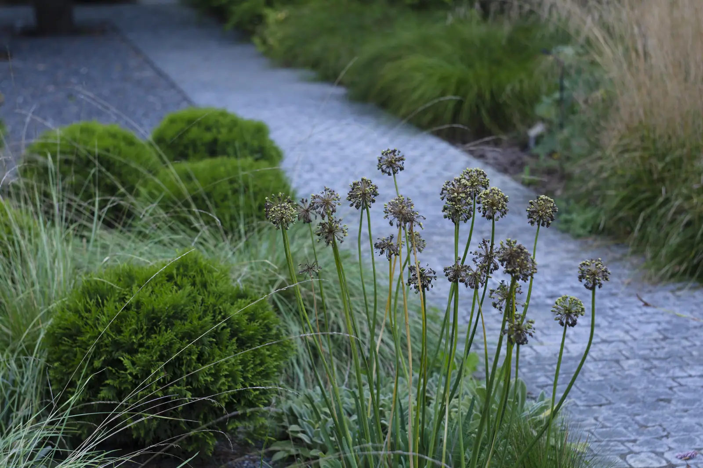
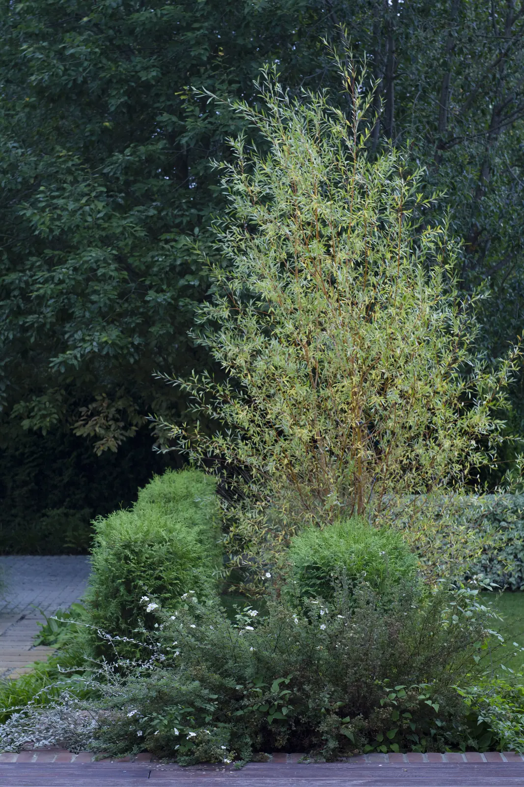
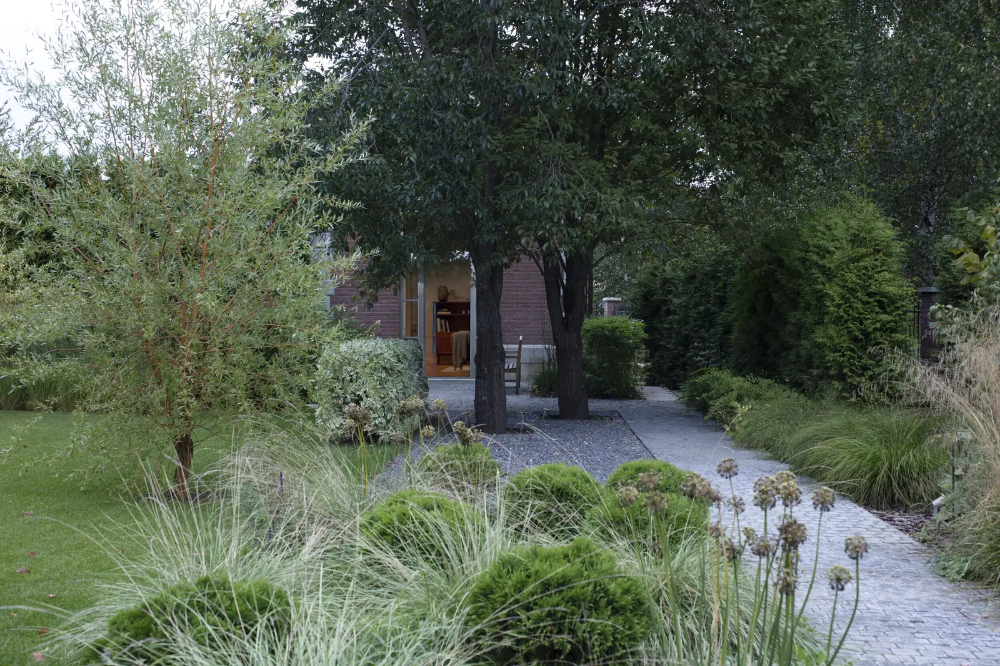
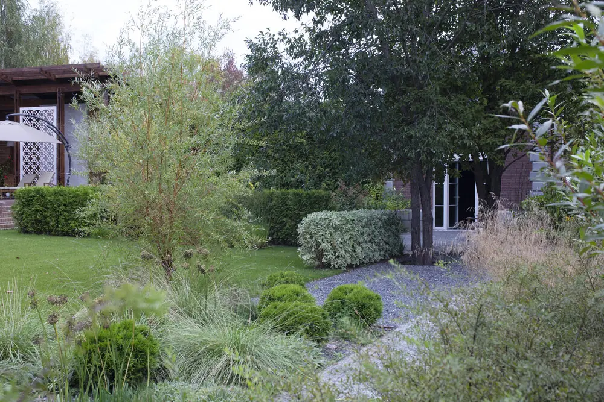
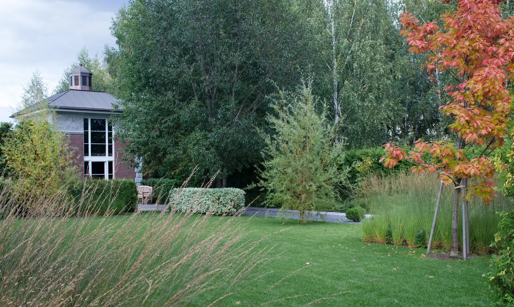
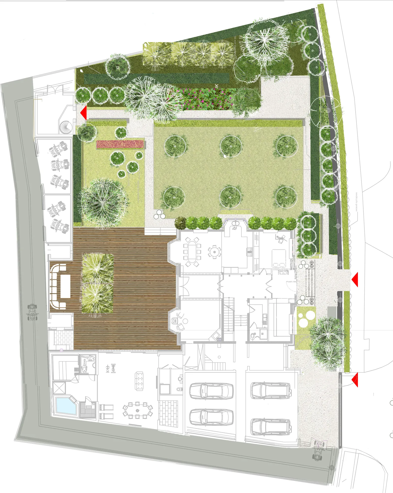
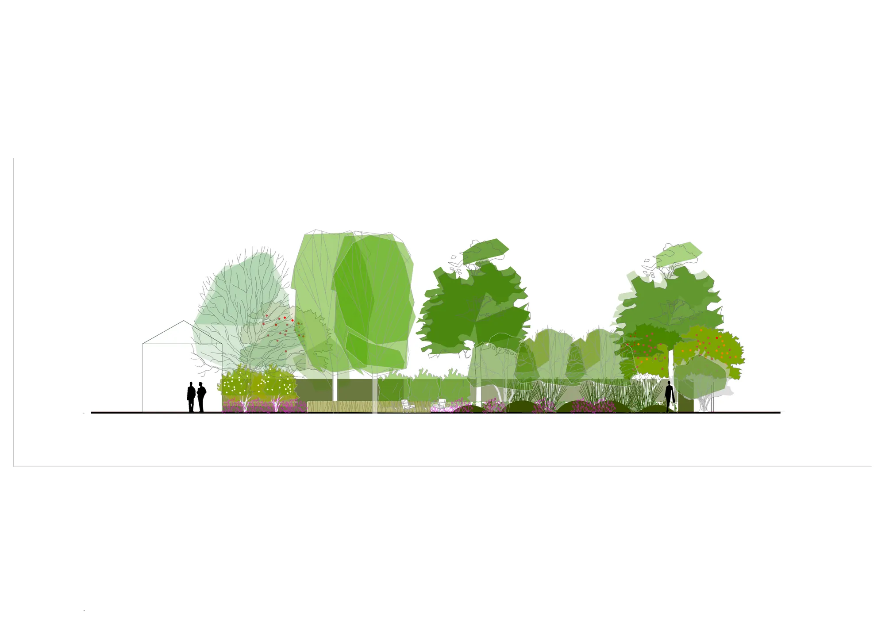
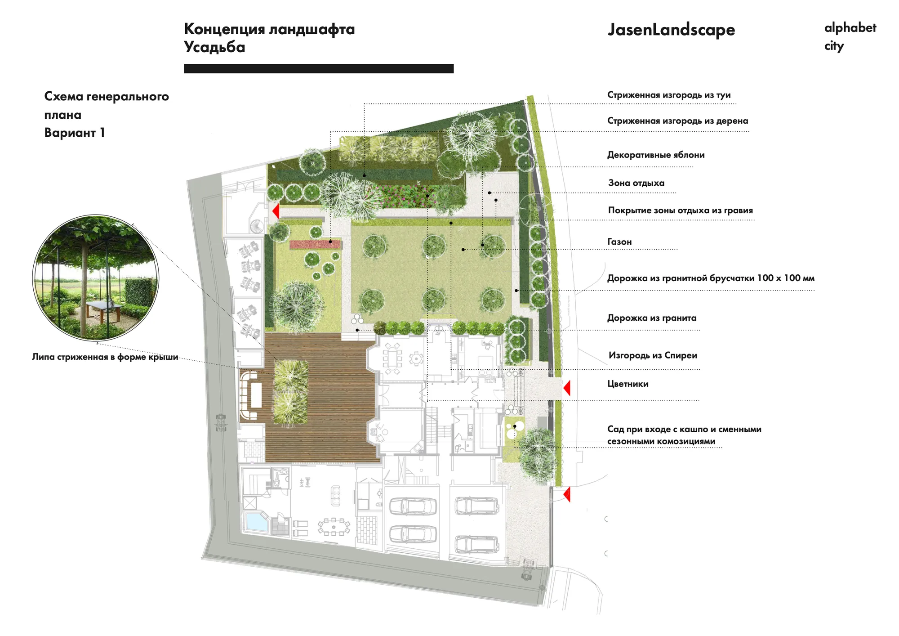

раздоры
Заказчик видел классический регулярный сад, но жизнь в закрытом посёлке — это прежде всего поиск тишины. Сад работает на контрасте строгой геометрии и мягких форм цветников.
Регулярный каркас — прямые дорожки, чёткие границы мощения, изгороди из туи — задаёт ритм. Поверх него лежит «мягкий слой» злаков, многолетников и живописных деревьев.
Сад декоративен в каждом сезоне: весной цветут клён красный и яблоня ‘Evereste’, зимой графику дают ивы и стриженый дёрен.




чертежи и схемы


